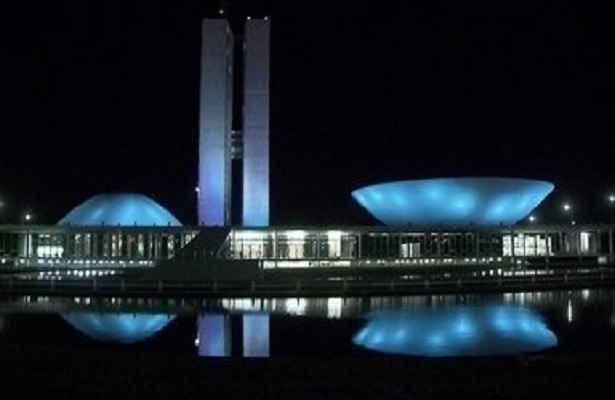

Brasil supera as expectativas na maior festa esportiva do planeta
30/12/2016 23h09 - Atualizado 30/12/2016 23h09
Um Rio de Janeiro como nunca se viu, no topo do planeta. O mundo parou e nós decolamos.
Na hora, deu medo: dez suspeitos de terrorismo na cadeia. E deu um pouco de vergonha: 500 operários entraram em ação para resolver os problemas do prédio da delegação da Austrália.
Nossos estúdios foram para dentro do Parque Olímpico. Vimos tudo com um novo olhar. Nunca de tão perto, com tantos detalhes. Cada instante, o tempo inteiro. Vimos os tropeços, a solidariedade da rival e o esforço.
Uma piscina mudou de cor e ficou verde, e nadadores americanos afundaram numa mentira. Os heróis assaltados foram desmascarados.
Câmeras de segurança registraram os passos de James Feigen, Gunnar Bentz, Ryan Lochte e Jack Conger. Tudo não passou de uma arruaça num posto de gasolina. Ryan Lochte fugiu da raia, pintou o cabelo e de mocinho virou vilão.
No capítulo final, o adeus de um mito adorado, supercampeão: Michael Phelps, a maior saga olímpica de todos os tempos. Ele saiu de cena, mas deixou uma antiga fã como sucessora: Katie Ledecky foi tão rápida que parecia disputar sozinha.
Soberana, uma estrela maior ofuscou as rivais. A ginasta Simone Biles nem parece que é desse planeta. Gigante, com apenas 1,45m de altura.
Um rei que atende pelo nome de Usain Bolt majestosamente sambou, tirou fotos, cantou e provou que um raio pode atingir três vezes o mesmo lugar.
Numa linda manhã, um cardume diferente agitou o mar de Copacabana. Foi mesmo um pouco confuso. Poliana Okimoto tinha ficado em quarto na maratona aquática, mas a segunda colocada foi desclassificada por obstrução e Poliana ganhou a medalha de bronze.
No vôlei de praia, Bárbara e Ágatha, nossas princesinhas prateadas. O vôlei foi mesmo a nossa praia: Bruno e Alison, o ouro esquentou a madrugada na areia.
Nas águas da Lagoa Rodrigo de Freitas, uma canoa turbinada. Isaquias Queiroz veio da Bahia em busca de um tesouro: foi o primeiro brasileiro com três medalhas numa única Olimpíada.
Os bons ventos sopraram no último instante: ouro para o Brasil em cima da linha de chegada. Diferença de dois segundos. Na Baía de Guanabara, Martine Grael e Kahena Kunze velejaram num mar de gente.
Nunca voamos tão alto. Um recorde. O francês não gostou das vaias, comparou com o nazismo, mas no duelo final do salto com vara Thiago Braz subiu no lugar mais alto do pódio.
No solo, uma estreia bronzeada de Arthur Nory, e uma volta por cima fenomenal. “Na primeira eu caí de bunda. Na segunda Olimpíada, eu caí de cara. Nessa, eu caí de pé", disse Diego Hypólito. De pé, em cima da prata.
Nosso “Senhor do Anéis”, Arthur Zanetti segurou firme as argolas prateadas.
Tiro e queda: Felipe Wu atingiu a medalha de prata.
No vôlei masculino, o Brasil foi campeão olímpico com a despedida dourada de Serginho.
No taekwondo, Maicon Siqueira conquistou a medalha de bronze.
Robson Conceição ganhou ouro no boxe.
Rafael Silva, o Baby, tinha fome de medalhas. Abocanhou o bronze no judô.
A judoca Mayra Aguiar beijou a bandeira, o namorado e a medalha de bronze.
E a maior vitória de todas: Rafaela Silva venceu o racismo e o preconceito, e ganhou ouro no judô. Foi o orgulho de um país inteiro.
E na pátria de chuteiras, o futebol foi mesmo uma caixinha de surpresas. Nossos craques eram vaiados, não faziam gols nem contra os times sem tradição. Mas o jogo virou e eles desencantaram. Na final, uma assombração alemã. Mas dessa vez agarramos a chance e o futebol fechou os Jogos Olímpicos com chave de ouro.